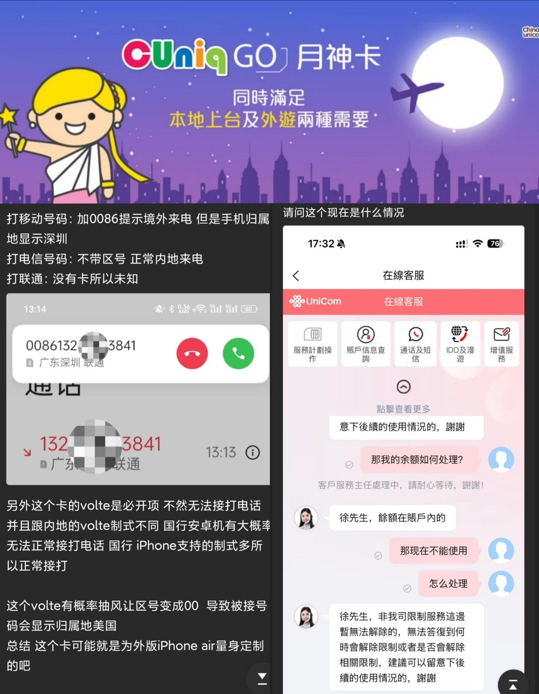
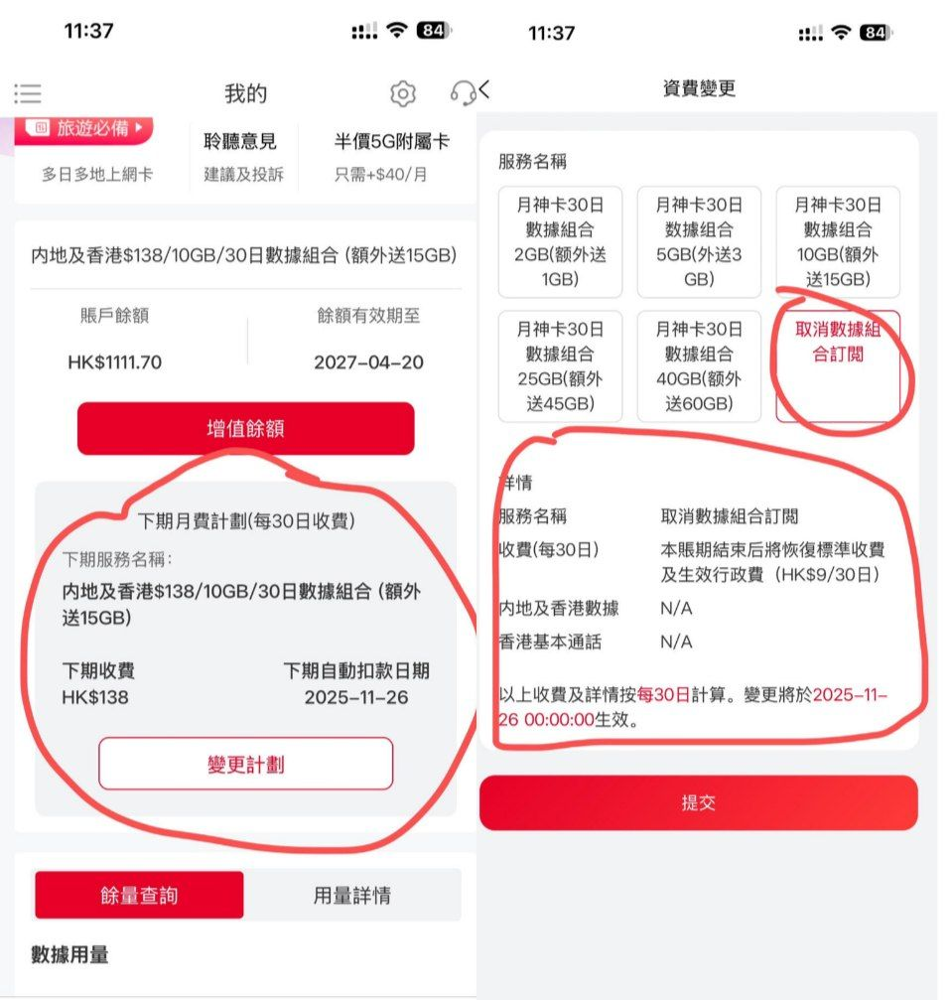
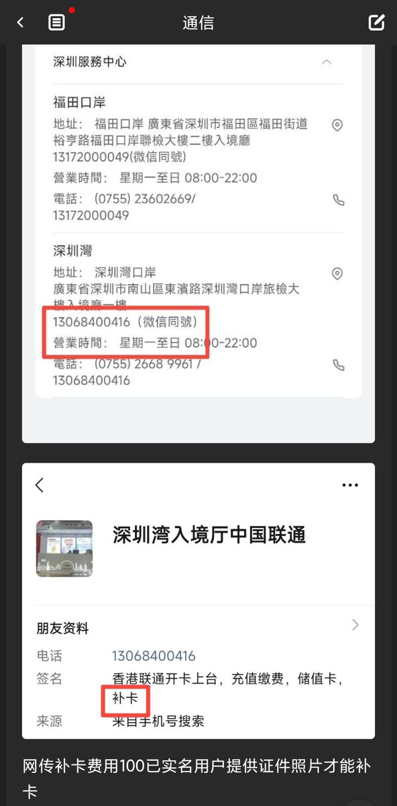
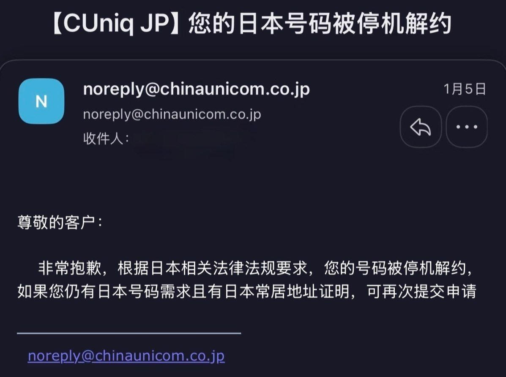
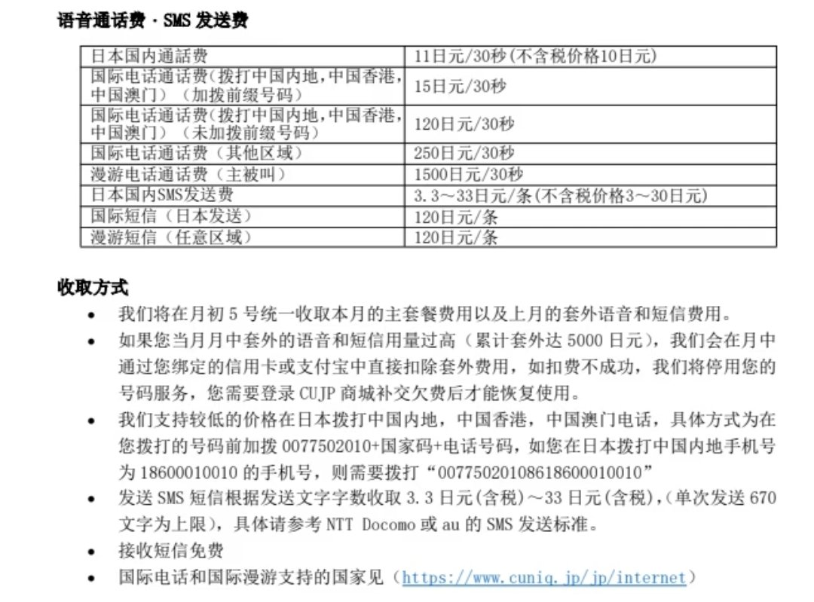

提到CUniq HK月神，也9港元行政费保号人尽皆知。
当然这家也是跟CTExcel UK一样的背刺专家，年底给上台用户首年5折，有套餐是免行政费的。
每个月268HKD 180G，历史新低、结合副卡半价40hkd*3，倒是非常划算。除北上广深有联通5G NSA外，其他地方常驻4G，不支持开启独立5G。
在去年9月份iPhone Air推出后，这些买外版用户想在纯eSIM手机上托管+86号码，才集体上车。最少三个月，用 SUMMER 优惠券实际消费 HK$135。而且需要上传信用卡图片（可码CVV）才可以开内地号。
按邮件提示完成实名认证（需人脸），网传需要用夸克浏览器，用谷歌Chrome浏览器黑屏无法识别安装的eSIM🤗内地号码占工信部一证五号，且风控后会进入两不管的境地。
在内地联通漫游时若启用VoLTE拨号，会计入通用流量中（暂且蒙古）并且呼出会带境外来电提示。如果要他不带+86（0086），那需要关闭VoLTE，但是内地2/3g逐渐退网，你所在地区不一定还能打的出去，得看当地有没有联通3g了🤣如果说CUniq JP是30s，那么CUniq HK的计费周期是30天。
最后就是迁移eSIM、补卡都得亲临香港门店办理哦～如果懒得去香港，联通香港在深圳湾口岸有员工，加他私人微信，再发香港号码和实名用的证件照片（护照/通行证）给她，她会开个微信视频通话看看是不是本人，再转100块就帮你办了。
一会收到了新二维码，省去了线下去香港找营业厅的时间和路费😇

当然这家也是跟CTExcel UK一样的背刺专家，年底给上台用户首年5折，有套餐是免行政费的。
每个月268HKD 180G，历史新低、结合副卡半价40hkd*3，倒是非常划算。除北上广深有联通5G NSA外，其他地方常驻4G，不支持开启独立5G。
在去年9月份iPhone Air推出后，这些买外版用户想在纯eSIM手机上托管+86号码，才集体上车。最少三个月，用 SUMMER 优惠券实际消费 HK$135。而且需要上传信用卡图片（可码CVV）才可以开内地号。
按邮件提示完成实名认证（需人脸），网传需要用夸克浏览器，用谷歌Chrome浏览器黑屏无法识别安装的eSIM🤗内地号码占工信部一证五号，且风控后会进入两不管的境地。
在内地联通漫游时若启用VoLTE拨号，会计入通用流量中（暂且蒙古）并且呼出会带境外来电提示。如果要他不带+86（0086），那需要关闭VoLTE，但是内地2/3g逐渐退网，你所在地区不一定还能打的出去，得看当地有没有联通3g了🤣如果说CUniq JP是30s，那么CUniq HK的计费周期是30天。
最后就是迁移eSIM、补卡都得亲临香港门店办理哦～如果懒得去香港，联通香港在深圳湾口岸有员工，加他私人微信，再发香港号码和实名用的证件照片（护照/通行证）给她，她会开个微信视频通话看看是不是本人，再转100块就帮你办了。
一会收到了新二维码，省去了线下去香港找营业厅的时间和路费😇





提到CUniq HK月神，也9港元行政费保号人尽皆知。当然这家也是跟CTExcel UK一样的背刺专家，年底给上台用户首年5折，268hkd 180G，历史新低、结合副卡半价40hkd*3，非常划算。除北上广深有联通5G NSA外，其他地方常驻4G。
在去年9月份iPhone https://t.co/l62itiAZNf https://t.co/YdwuLLeury
在去年9月份iPhone https://t.co/l62itiAZNf https://t.co/YdwuLLeury
提到CUniq HK月神，也9港元行政费保号人尽皆知。当然这家也是跟CTExcel UK一样的背刺专家，年底给上台用户首年5折，每个月268hkd 180G，历史新低、结合副卡半价40hkd*3，倒是非常划算。除北上广深有联通5G NSA外，其他地方常驻4G，不支持开启独立5G。
在去年9月份iPhone https://t.co/7l7h3xhTYK https://t.co/YdwuLLeury
在去年9月份iPhone https://t.co/7l7h3xhTYK https://t.co/YdwuLLeury
中国联通的境外品牌CUniq前阵子倒是动静蛮大，香港月神9港元行政费保号，日本全功能电话卡550日元每月。
昨天奶昔论坛就有用户提到CUniq JP的550日元套餐被解约，要求补充长居日本的证明（在留卡？）这卡除了保号比CMLink https://t.co/rJYQgLFWJU
昨天奶昔论坛就有用户提到CUniq JP的550日元套餐被解约，要求补充长居日本的证明（在留卡？）这卡除了保号比CMLink https://t.co/rJYQgLFWJU